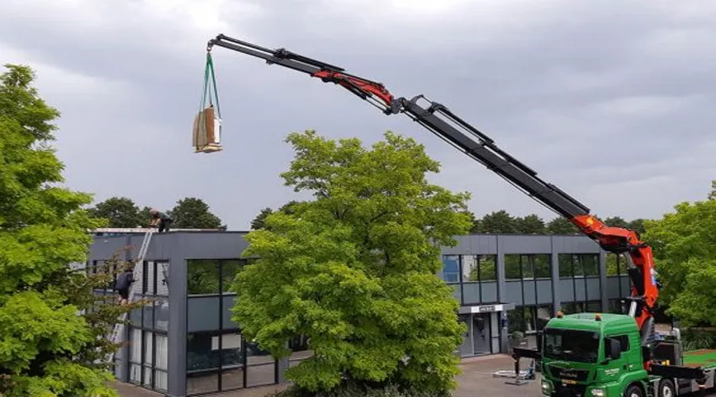
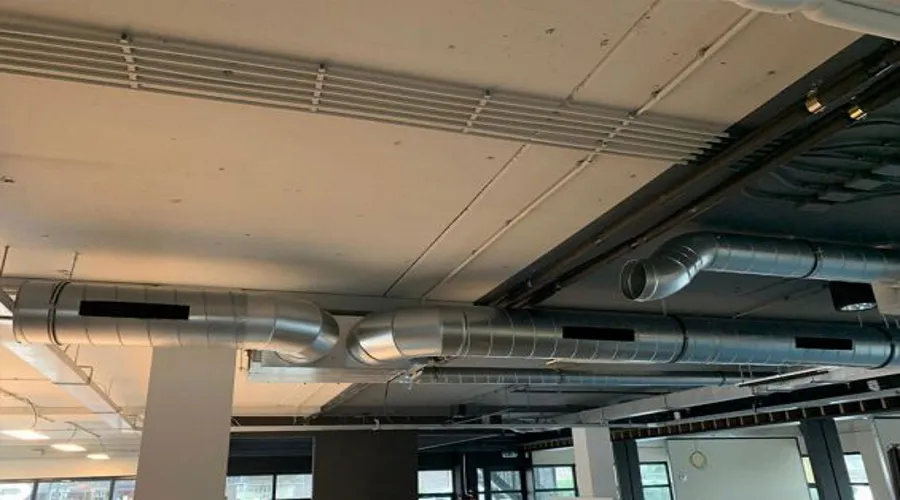

Diensten
Wij adviseren, leveren en installeren klimaatsystemen, en blijven daarna uw aanspreekpunt voor onderhoud en storingen. Voor particulieren en bedrijven.

Airconditioning
De meest toegepaste airconditioning is het splitsysteem. Het bestaat uit een binnenunit in de ruimte en een buitenunit, bijvoorbeeld op het dak. Daartussen lopen koelleidingen met koudemiddel, die de werking van de airconditioner mogelijk maken. De meeste systemen kunnen behalve koelen ook verwarmen.
Splitsystemen worden veel gebruikt in woonhuizen, kantoorruimtes en winkels. Elke ruimte vraagt om een passend model:
- Wandmodel
- Hoog aan de muur gemonteerd.
- Plafondonderbouw
- Hangend onder het plafond, geschikt voor ruimtes zonder verlaagd plafond.
- Cassettemodel
- In een bestaand systeemplafond geplaatst, blaast de lucht naar vier kanten uit.
- Satellietmodel
- Werkt met een kanaalsysteem boven het plafond. Alleen de roosters zijn zichtbaar.
- Vloermodel
- Laag aan de wand gemonteerd, bijvoorbeeld onder een raam.

Ventilatie
Ventilatie ververst de lucht in een pand met een af- en toevoersysteem. Daarom wordt het ook wel luchtbehandeling genoemd. In veel gevallen kan via de ventilatie ook de temperatuur worden geregeld, eventueel per ruimte of per afdeling.
Wij installeren luchtbehandeling in de vorm van:
- natuurlijke ventilatie;
- mechanische ventilatie;
- ventilatie met warmteterugwinning (WTW);
- ventilatie in combinatie met airconditioning.
Daarnaast voeren wij aanvullende werkzaamheden uit om het klimaat in een woning, bedrijfsgebouw of school te verbeteren.

Klimaatbeheersing
Een VRF-systeem (variabele koudemiddelstroom) koelt en verwarmt met meerdere buiten- en binnenunits. Het is geschikt voor kantoorpanden, hotels en winkels. Een micro-VRF-systeem wordt ook veel gebruikt in woonhuizen en praktijkruimtes.
Koelen en verwarmen, eventueel samen met vloerverwarming, en ventileren met of zonder warmteterugwinning: alles is te combineren in één systeem.
Energiezuinig en stil
Het KX6-systeem van Mitsubishi Heavy Industries behoort tot de zuinigste systemen op de markt, en de buitenunits staan bekend om hun lage geluidsniveau. Voor dit soort energiezuinige warmtepompsystemen kunnen bedrijven gebruikmaken van de Energie-investeringsaftrek (EIA).
Onderhoud en storingen
Een installatie die regelmatig wordt onderhouden, werkt zuiniger, gaat langer mee en valt minder snel uit. Wij voeren periodiek onderhoud en controles uit en lossen storingen en reparaties vakkundig op.
Voor installaties met koudemiddel gelden wettelijke regels. Koel-MY is gecertificeerd volgens de F-gassenregeling (BRL 100) en mag installaties met een koudemiddelinhoud tot 5 ton installeren, onderhouden en buiten dienst stellen. Elke twee jaar worden wij daarop gecontroleerd en gekeurd.
Werkt uw installatie nog met R22? Sinds 1 januari 2015 mag R22 voor geen enkel doel meer worden gebruikt. Bij een lekkage kan zo'n systeem niet meer worden bijgevuld en moet het worden omgebouwd of vervangen. Meer over de uitfasering van koudemiddelen